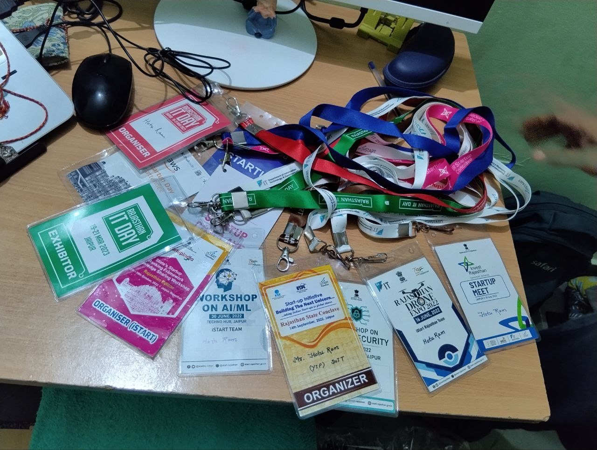
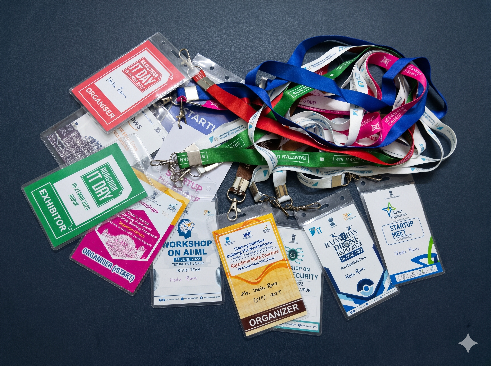
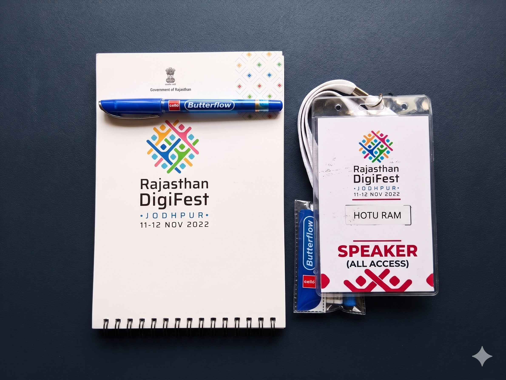
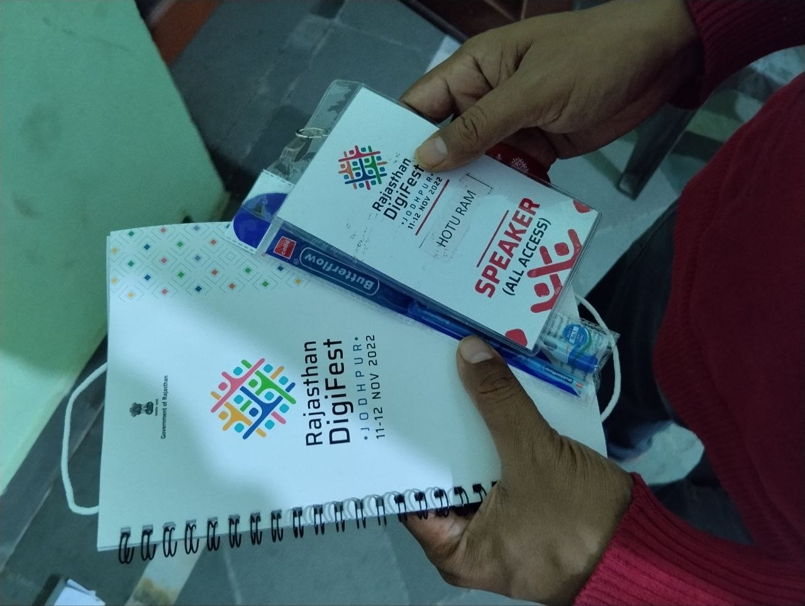

Startup Incubation Executive — Full-Time, In-Office at Bhamashah Techno Hub Incubation Center, Jaipur
iStart Rajasthan Program · DoIT&C, Government of Rajasthan · Incubation, Research & Operations
Posted full-time at the Bhamashah Techno Hub incubation center in Jaipur, I worked for two years as a Startup Incubation Executive in the iStart Rajasthan program under DoIT&C, Government of Rajasthan—driving incubation support, research analysis, stakeholder coordination, and ecosystem events.
About iStart Rajasthan: iStart Rajasthan is the flagship startup and innovation initiative of the Government of Rajasthan (DoIT&C), built to foster entrepreneurship, innovation, and investment through single-window startup onboarding, incubation infrastructure at centers like Bhamashah Techno Hub, mentorship, funding and grant facilitation, ecosystem events, and market/talent enablement.
Phase-by-phase breakdown of incubation management, research and reporting, mentor/startup coordination, and program execution across the two-year tenure.
Complete list of ecosystem events, fests, investor mixers, and startup workshops supported across Jaipur and Jodhpur during the two-year tenure—categorized by format and operational scope.
Event lanyards, badges, program snapshots, and kits from iStart Rajasthan workshops, expos, and conclaves. Official experience certificates and monthly progress reports (MPRs) are public-sector records and can be shared on demand.

Organiser and exhibitor badges and event visuals from Rajasthan IT Day, State Conclave, Drone Expo, AI/ML Workshop, and Startup Meet.

Additional snapshot of iStart Rajasthan workshops, conclaves, and ecosystem event materials.

Official Rajasthan DigiFest Jodhpur (11–12 Nov 2022) Speaker (All Access) badge and conference kit.

On-ground documentation from Rajasthan DigiFest Jodhpur startup outreach and event operations.
Built a seat-allotment system for startups at Bhamashah Techno Hub—automating Excel sheets with pandas to color-code Tech, Non-tech, and Vacant seats and mapping the coordinate position of each seat across floor layouts using Computer Vision in Python, Pandas, OpenCV, Jupyter Notebook, and PyCharm.